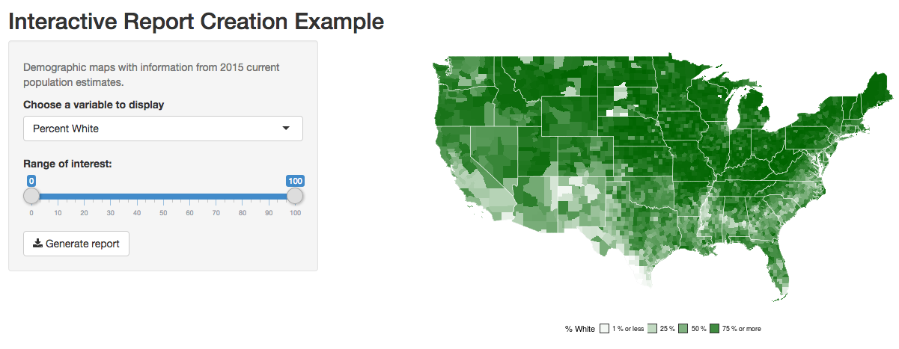
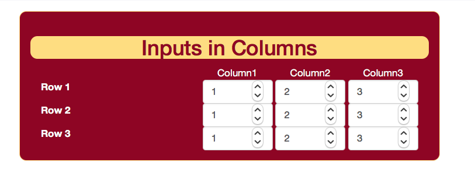

4 Tips: from Excel tool to Shiny
4.1 Excel-like functions
One can easily define functions in R. For example, functions for Net Present Value, Internal Rate of Returns, and loan payment etc.
# saved in helpers_excel.R
npv <- function(rate, values) sum(values / (1 + rate)^seq_along(values))
irr <- function(x, start=0.1) {
t <- seq_along(x)-1
f <- function(i) abs(sum(x/(1+i)^t))
return(nlm(f,start)$estimate)
}
fv <- function(rate, nper, pmt, pv = 0.0, type = 0) {
pvif <- (1+rate)^nper # Present value interest factor
fvifa <- if(rate==0) nper else ((1+rate)^nper - 1) / rate
return(-((pv * pvif) + pmt * (1.0 + rate * type) * fvifa))
}
pv <- function(rate, nper, pmt, fv = 0.0, type = 0) {
pvif <- (1+rate)^nper # Present value interest factor
fvifa <- if(rate==0) nper else ((1+rate)^nper - 1) / rate
return((-fv - pmt * (1.0 + rate * type) * fvifa) / pvif)
}
pmt <- function(rate, nper, pv, fv=0, type=0) {
rr <- 1/(1+rate)^nper
res <- (-pv-fv*rr)*rate/(1-rr)
return(res/(1+rate*type))
}4.2 Read Variables from csv file
When you have many user-provided input variables and many outputs that are returned to the user, it is convenient to automate the definition of input and output through a loop.
For example, consider a table of variable name, label, indicator for a user-provided input, default value etc.

This kind of table can be converted into UI objects in a loop. For example, each row can be processed by lapply() function;
# saved in minimum_example3.R
df <- read.csv("variable_data.csv", stringsAsFactors =FALSE)
my_ui <-
fluidPage(
# define inputs
with(df,
lapply(1:nrow(df), function(i) {
if (by_user[i] == 1) { # select only inputs provided by user
numericInput(inputId = variable[i], label = label[i], value=default[i])
}
})
),
# define outputs
with(df,
lapply(1:nrow(df), function(i) {
if (by_user[i] == 0 ) { # select only outputs returned to user
uiOutput(variable[i])
}
})
)
)4.3 Multiple Scenarios in Columns
Excel-based decision-making tools are often designed to contain variables in rows and varying scenarios in columns via CSS.
An example is shown in input_columns.R and main.css in custom_css_example folder.
Here is a screen shot; 
4.4 Generating a Report
Using Rmarkdown and knitr, it is easy to add a report function containing texts and objects from a shiny app.
Here is a screen shot; 
4.5 Login via Gmail
A third party user authentication is often more secure than trying to set one up by yourself. We use googleAuthR package to set up a user login via Google account.
# saved in a folder google_longin_example
library(shiny)
library(googleAuthR)
library(googleID)
# remotes::install_github("MarkEdmondson1234/googleID")
# Google login authentication: -----------------------
# for the first time, set up your CLIENT_ID and CLIENT_SECRET
# https://console.developers.google.com/apis
options("googleAuthR.webapp.client_id" = CLIENT_ID)
options("googleAuthR.webapp.client_secret" = CLIENT_SECRET)
options("googleAuthR.scopes.selected" =
c("https://www.googleapis.com/auth/userinfo.email",
"https://www.googleapis.com/auth/userinfo.profile"))
ems <- function(txt) em(strong(txt))
ui <- fluidPage(
googleAuthUI("loginButton"),
uiOutput("user_info")
)
server <-
function(input, output, session){
user_session <- reactiveValues()
## Create access token and render login button
access_token <-
callModule(googleAuth,
"loginButton",
login_text =
HTML('<i class="fa fa-google fa-1x"></i> Login with Google'),
logout_class = "btn btn-primary",
approval_prompt = "force")
jsResetCode <- "shinyjs.reset = function() {history.go(0)}"
output$fetch_func <- gar_api_generator("https://www.googleapis.com/urlshortener/v1")
# create user_session$info upon google login
observeEvent(access_token, {
if (!is.null(access_token()$credentials$access_token)) {
user_session$info <- data.frame(with_shiny(f = get_user_info,
shiny_access_token = access_token()))
} else {
user_session$info <- NULL
}
})
# display user info
output$user_info <- renderUI({
if (is.null(user_session$info)) return()
user <- user_session$info
div(HTML(
paste("Dsiplay Name:", ems(user$displayName), '<br>',
"Family Name:", ems(user$name.familyName), '<br>',
"Given Name:", ems(user$name.givenName), '<br>',
"Gender:", ems(user$gender),'<br>',
"Organizations:", ems(user$organizations.name), '<br>',
"Email Address:", ems(user$emails.value), '<br>'),
paste0("<img src= '", gsub('?sz=50','',user$image.url[1]),
"' width='100' height='100'>")
))
})
}THERE IS A TECHNICAL ISSUE AT THE MOMENT.
Here is a screen shot;
4.6 Cloud database via MongoDB
Along with user authentication, we often find it useful to store user-provided values in a database. If you are hosting a Shiny app in Shinyapps.io, one way to do this is to connect to a cloud database. Here is an example using mLab’s database via mongolite package.
library(mongolite)
# set up database and database user at mlab.com
host <- "ds139920.mlab.com:39920"
username <- "user2018"
password <- "user2018"
db <- "mlab_example"
url <- paste0("mongodb://",username,":",password,"@", host, "/",db)
# connect to mlab's database
mdb_users <- mongo(collection="users", db=db, url = url)
mdb_usage <- mongo(collection="usage", db=db, url = url)
# example of mongo query
usage <- mdb_usage$find("{}")
nrow(usage)Here is a screen shot; 
4.7 Google Analytics
It is easy to add a usage tracking system via Google Analytics.
RStuido’s instructions: here and here.
To get started, here are the two steps;
An example is provided in minimum_example1.R file.
Note: when specifying your URL in Google Analytics, be sure to choose correctly “http” or “https”.
Tracking changes in input variables is also possible. See JavaScriptEvent in Shiny.
googleAnalyticsR provide a variety of tools to make use of Google Analytics data.
4.8 Custom Layout, Colors, and HTML modifications
To an extent, one can choose from various layouts, themes, and color palette options to customize the visual effects of a shiny application and make the application more accessible from mobile phones etc. While customization is beyond the scope of this tutorial, here are the basics;
Here is a screen shot; 
For more advanced customization, feel free to contact us. Our programmer may have a quick tip or may be hired for a short-term contract.